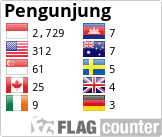

8 November 2024 | Admin
Observasi guru menjadi salah satu metode penting dalam dunia pendidikan untuk mengevaluasi kinerja pengajaran serta meningkatkan kualitas pembelajaran di sekolah..
Read More4 November 2024 | Admin
Kepala Dinas Dikbud Provinsi Bengkulu Bapak Saidirman, S.E., M.Si. hadiri Sosialiasi Antisipasi Kenakalan Remaja dan Rencana Program Kelas XII SMA.
Read More23 Oktober 2024 | Admin
SMA Negeri 1 Bengkulu Tengah berkesempatan menjadi peserta BPOM Mengajar dari BPOM Bengkulu, Rabu, 23 Oktober 2024 di Aula Oryza.
Read More1 Oktober 2024 | Admin
Upacara Peringatan Hari Kesaktian Pancasila berlangsung khidmat dengan Petugas dari OSIS dan Tim Paduan Suara. Dalam amanatnya, Inspektur Upacara yang.
Read More25 September 2024 | Admin
100 siswa Peserta Uji Kemahiran Berbahasa Indonesia (UKBI) 2024 melaksanakan ujian secara online di 4 ruangan, Selasa, 24 September 2024..
Read More23 September 2024 | Admin
Upacara Bendera Senin, 23 September 2024 berjalan baik dan lancar dengan petugas dari kelas X I, pengibar bendera dari Paskib.
Read More17 September 2024 | Admin
Puskesmas Kembang Seri mengadakan Penjaringan Kesehatan Berkala, Selasa, 17 September 2024. Kegiatan ini mendata berat badan, tinggi badan, kesehatan mata,.
Read More5 September 2024 | Admin
OSIS dan Fasilitator P5 Kelas XI melaksanakan Debat Terbuka Pemilihan Calon Ketua dan Wakil Ketua OSIS SMAN 1 Bengkulu Tengah.
Read More30 Agustus 2024 | Admin
Kepala Sekolah SMAN 1 Bengkulu Tengah Ibu Puji Hartati, M.Pd.Mat. resmikan launching Program Genta – Gerakan Cinta Alquran SMANSA di.
Read More
sman1benteng@gmail.com

Telepon
(0736) 7312022

Website
http://www.smansabengkulutengah.sch.id
Jalan Raya Kembang Seri KM. 12,
Kembang Seri, Talang Empat, Taba Pasmah,
Bengkulu Tengah, Kabupaten Bengkulu Tengah,
Bengkulu 38119
Senin – Jum’at

SMA Negeri 1 Bengkulu Tengah adalah sekolah yang berkomitmen mencetak generasi cerdas dan berkarakter. Dengan fasilitas yang memadai dan pengajaran berkualitas, sekolah ini mendukung perkembangan akademik dan non-akademik siswa untuk meraih prestasi terbaik.